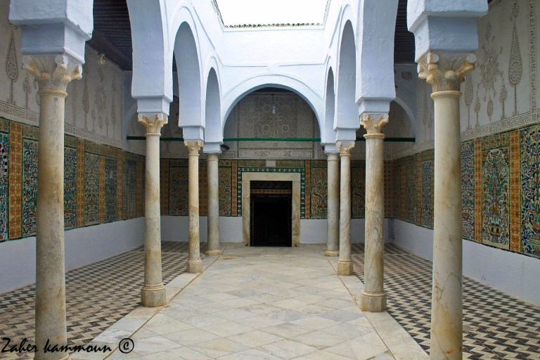

La Tunisie était toujours un pays d’accueil et d’hospitalité. Elle a accueilli durant
son histoire plusieurs peuples comme les Phéniciens, les romains, les vandales, les arabes mais aussi les
andalous.
Les andalous ont vécu en Andalousie en paie pendant des décennies jusqu’à la
reconquista espagnole à partir du 13 ème siècle. Elle a poussé les andalous a quitter leur pays vers les pays du
Maghreb. Plusieurs flux d’immigrations ont été enregistrés jusqu’à l’expulsion définitive des musulmans et des
juifs en 1906
Mosquée el Ksar:
Cette mosquée se trouve dans la médina de Tunis en face de dar Hssin (le siège de l’Institut National du
Patrimoine). Elle est caractérisée par un minaret carré d’inspiration hispano-mauresque.
Le minaret est construit en pierres de taille de petites dimensions. Il est orné de colonnettes, de décor
géométrique et d’arcatures. Ce minaret date du XVIème siècle.
Zaouia Sidi Kacem Jelizi (XVIème siècle):
C’est une œuvre d’un refugié d’origine andalouse : Kacem Jellizi. L’édifice est construit selon une architecture
andalouse caractérisée par une toiture en tuiles creuses vertes et vernissées surmontant un tambour carré
richement décoré
Le tambour est orné sur chaque coté par 3 grandes arcatures reposant sur des piliers en pierres de taille
Au dessus du tambour, se trouve de jolies niches rectangulaires revêtues en carreaux de faïence et ses angles
sont ornés par des colonnes de marbre blanc
Les plafonds peints du monument sont très jolis, on trouve aussi une collection très importante de carreaux de
céramique cuerda seca
Ce monument est transformé aujourd’hui en musée de céramique
Tourba de Youssef Dey
Cette tourba fait partie du complexe de la mosquée Youssef Dey (Kulliye). C’est mausolée qui abrite la tombe du souverain Youssef Dey mort en 1637. Cet édifice est l’œuvre de l’architecte Ibn Ghalib d’origine andalouse (indiqué sur une inscription de la tourba)
C’est un massif cubique couvert d’une toiture en pyramide à tuiles vertes vernissées et orné de jolies colonnettes
Rue des andalous:
C’est une rue très célèbre de la médina de Tunis, elle a été peuplée par des commerçants d’origine andalouse. Elle comporte un passage vouté (sabbat) construit en briques pleines et abrite de jolies demeures bien ornées à l’intérieur et à l’extérieur (jolies façades avec des portes monumentales cloutées et ornées d’heurtoirs)
Souk Chawachine (XVIIème sièlce):
Ce souk constitue l’un des plus importants souks de la médina de Tunis. Il est construit pendant l’époque ottomane au 17 ème siècle pour réunir les fabricants et les vendeurs de chéchias (les bonnets de laine)
Dar Othmen:
C’est un palais de la médina de Tunis de style hispano-maghrébin. Il est connu pas sa jolie façade et sa porte monumentale
Ce palais a été construit par Othmen Dey qui a accueilli a bras ouverts les andalous expulsés. Il présente une riche décoration avec des stucs ciselés, des panneaux de marbre noir et blanc, des boiseries de plafonds peints et dorés
Ce monument a été classé en 1922 et restauré en 1962
Sbil de Youssef Dey à Bizerte (XVII ème siècle):
C’est une fontaine publique construite dans une place publique près du vieux port de Bizerte. Elle est construite par un refugié andalou.
Cette fontaine est caractérisée par un arc en claveaux de marbre alternés noirs et blancs et un rebord en tuiles rondes de couleur verte.
On peut voir une jolie inscription en arabe et en turc qui indique le nom de l’architecte « Al Andaloussi » et la date de fondation
Cette fontaine est alimentée par une noria actionnée par un animal
Les forts de Ghar el Melh (Porto Farina):
Les trois forts de Ghar el Melh (el borj Loutani, Westani et borj Lazarit ) ont été construits au 17 ème siècle.
Le fort du milieu (el Borj el Wistani) a été édifié en 1640 par l’architecte d’origine andalouse Musa al Andaloussi
De forme rectangulaire, cette forteresse est constituée de hautes murailles et de 4 bastions octogonaux. On accède à ce fort par une porte monumentale
Zaouïa Sidi Ali Azzouz (Zaghouan):
Ce mausolée se trouve à Zaghouan, une jolie ville fondée par les andalous. Il abrite la tombe d’un saint très respecté en Tunisie : Sidi Ali Azouz. La Zaouïa est très ornée avec de stucs ciselés, de carreaux de faïence et une très jolie coupole verte à l’extérieur et très ornée à l’intérieur. Elle repose sur des trompes soutenues par d’élégantes arcatures et colonnes variées
Sidi Ali Azzouz est d’origine marocaine, il est le patron de Zaghouan et le fondateur de la Tarika Azouzia
Chaque vendredi, les adeptes organisent des séances mystiques marquées par des chansons religieuses
Testour et sa grande mosquée:
Testour constitue la plus importante ville andalouse en Tunisie. Elle est connue par ses édifices de style andalouse comme les maisons, les zaouïas et les mosquées surtout la grande mosquée
La grande mosquée se distingue par son joli minaret installé sur la façade Nord Est. Il se compose d’une tour carrée couronnée de deux tours octogonales. Il est orné de corniche, des fenêtres en baies jumelées de panneaux de marbre et de faïence et d’une jolie pyramide couronnée. Sur la face sud on trouve une horloge qui tourne à l’envers
La cour de la mosquée est entourée de 4 galeries couvertes de tuiles
Mosquée Ibn Khayroun al Andaloussi au Kairouan (IXème siècle):
Connue sous le nom de la mosquée des trois portes, cette mosquée se trouve dans la médina de Kairouan. Elle est caractérisée par sa jolie façade bien ornée
C’est une œuvre de Mohamed Ibn Khayroun d’origine andalouse. Sa façade est ornée de pierre sculptée qui présente une inscription indiquant la date de fondation (866), le nom du fondateur et la date de restauration (1440). La façade est ornée aussi par des arcs, des colonnes de marbre et de jolies chapiteaux

Zaouia Sidi Saheb au Kairouan (XVIIème siècle):
Cette zaouïa abrite la tombe de Abou Zamaa Balaoui, le barbier, le compagnon du Prophète Mohamed
C’est un ensemble architectural très orné avec des stucs ciselés, des panneaux de faïence
La porte d’entrée donne sur une cour entourée de portiques abritant des chambres pour les hôtes, un collège, une mosquée
Au dessus de la mosquée se trouve une inscription indiquant le nom des deux architectes d’origines andalouse Ahmed et Mustafa al Andaloussi et la date de fondation
Le visiteur peut voir aussi la salle qui abrite la tombe du saint connue par sa jolie coupole
Dar Jallouli (Sfax):
C’est une maison de la médina de Sfax. Elle est construite au 17ème siècle selon un style andalou avec des stucs ciselés, des carreaux de faïence et du bois peint ou sculpté. Cette maison était la demeure du Qaid de Sfax (le représentant du Bey) de la famille Jallouli
La coupole d’Abdallah at Turjuman:
Ce monument se trouve à l’intérieur de Beb Mnara de la médina de Tunis, elle abrite la tombe du prêtre chrétien majorquin d’origine et converti à l’Islam sous le nom d’Abdallah at Turjman. Son nom d’origine était Anselm Turmeda
C’est une coupole est construite en pierres de taille importées de Majorque, elle est dépourvue de tout décor. On peut lire une inscription en majorquin et en arabe
La coupole a été construite en 1433. Elle a été restaurée par la municipalité de Palma
La mosquée el Hwa ou Attaoufik:
Cette mosquée est située à Tunis près de la médina à la place des moutons et face au mausolée de Sidi Kacem Jelizi. Elle a été fondée pendant l’époque Hafside par la Reine Atf d’origine Basque, la mère du Calife Al Mustansir et l’épouse d’Abu Zakaria
Son minaret est de forme carrée et à étage unique. Il est surmonté d’un lanternon et construit en pierre de taille finement taillées et appareillées. Chaque face est percée d’une petite lucarne rectangulaire éclairant l’escalier et deux baies jumelées reposant sur une colonnette coiffée d’un chapiteau. Le parapet est orné de merlons en dent de scie. Une tige en métal portant trois boules enfilées terminées d’un beau croissant couronne le minaret